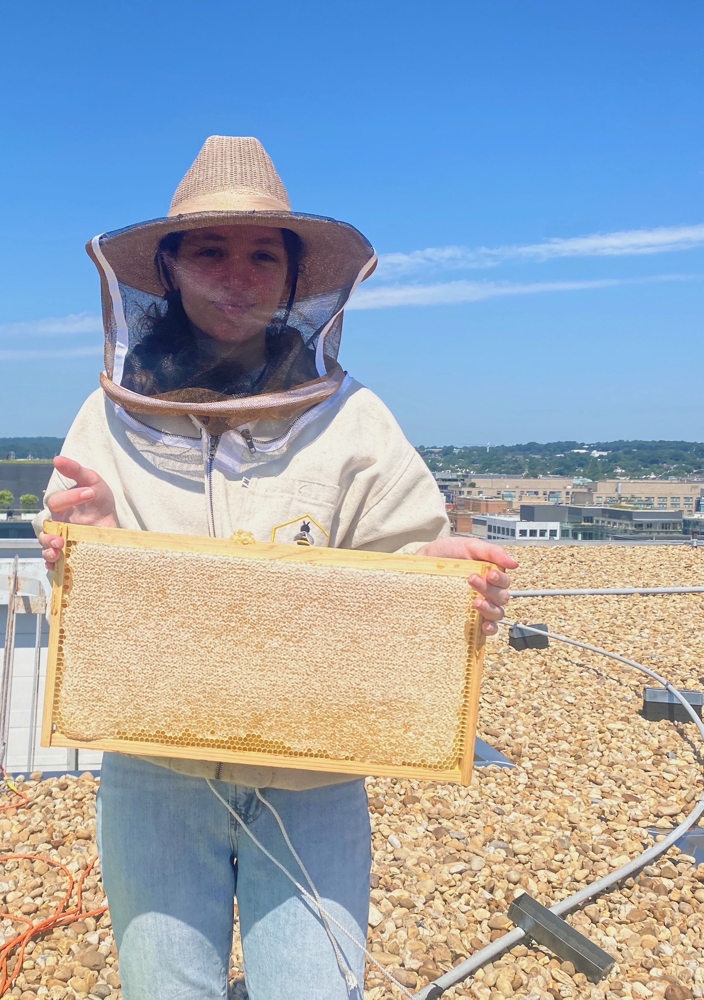

Like many librarians, I've enjoyed a winding path to get to where I am today. I graduated from the University of Michigan in 2021 with a degree in Economics and a certificate in Sustainability. I then returned to school and got my Master of Management in 2022.
When I graduated, I wasn't quite sure what I wanted to do professionally, but I knew that I wanted to have a career that would have a positive impact on my community. I took a seasonal position as a beekeeper's assistant, and then began working at an independent bookstore in my hometown. During this time, I had reignited my passion for reading. I was reminded of the breadth of services that bookstores and libraries can offer their communities beyond books.
I moved to the Washington, D.C. area and began a position as a Library Page at a public library. I'm currently a student at Drexel University pursuing my MLIS with certificates in Metadata and Digital Technologies and Users and Library Services. Upon graduating, I hope to continue working in public libraries so that I can provide high quality services to my community.
In my free time, I read and dance. My favorite genre is fantasy, and I love stories that are inspired by folklore. I'm an aerial dancer, and I love to dance on many different apparatuses.
